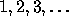
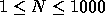
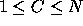

| Prime Cuts |
A prime number is a counting number (  ) that is evenly divisible only by 1 and itself. In this problem you are to write a program that will cut some number of prime numbers from the list of prime numbers between (and including) 1 and N. Your program will read in a number N; determine the list of prime numbers between 1 and N; and print the C*2 prime numbers from the center of the list if there are an even number of prime numbers or (C*2)-1 prime numbers from the center of the list if there are an odd number of prime numbers in the list.
Each input set will be on a line by itself and will consist of 2 numbers. The first number (  ) is the maximum number in the complete list of prime numbers between 1 and N. The second number (  ) defines the C*2 prime numbers to be printed from the center of the list if the length of the list is even; or the (C*2)-1 numbers to be printed from the center of the list if the length of the list is odd.
For each input set, you should print the number N beginning in column 1 followed by a space, then by the number C, then by a colon (:), and then by the center numbers from the list of prime numbers as defined above. If the size of the center list exceeds the limits of the list of prime numbers between 1 and N, the list of prime numbers between 1 and N (inclusive) should be printed. Each number from the center of the list should be preceded by exactly one blank. Each line of output should be followed by a blank line. Hence, your output should follow the exact format shown in the sample output.
21 2 18 2 18 18 100 7
21 2: 5 7 11 18 2: 3 5 7 11 18 18: 1 2 3 5 7 11 13 17 100 7: 13 17 19 23 29 31 37 41 43 47 53 59 61 67